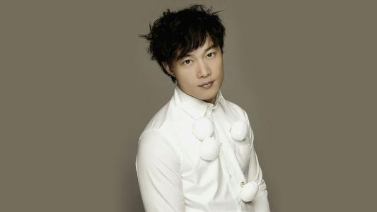
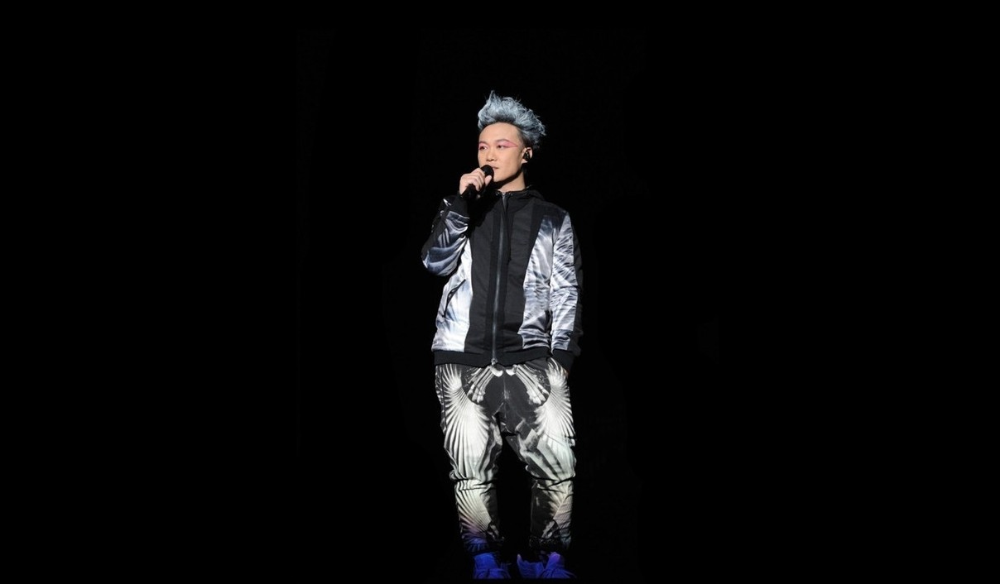
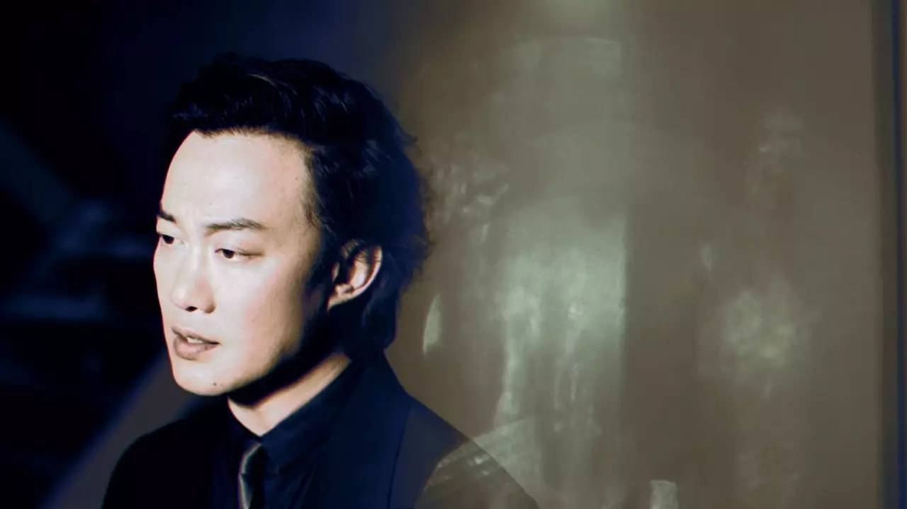

陈奕迅
陈奕迅（英语：Eason Chan
Yick-shun，1974年7月27日－），香港男歌手及演员，曾担任第八至第十届香港演艺人协会副会长；亦曾获美国《时代杂志》形容为影响香港乐坛风格的人物
。2010年，入选全球华人音乐殿堂—中国华语金曲奖“30年经典评选”，成为90年代出道歌手唯一代表。他曾三次获得“金曲奖”最佳国语男歌手奖
(金曲奖)，三次歌王并列为纪录保持者。
重要事件
-
1995年，陈奕迅赢得新秀冠军后不久，推出个人首只歌曲《我的理想》，是卡通片《卡拉OK战士》的主题曲。
-
1996年，他推出首张粤语个人同名大碟《陈奕迅》，首只主打歌为《时代曲》，事实上他在此专辑内第一首录音的歌曲是《游离份子》
-
1997年，陈奕迅推出第二张粤语大碟《与我常在》，专辑中的主打歌曲《与我常在》得到不错的反应，尤其电台的热播，让陈奕迅开始得到乐迷注意。
-
1998年，仍被唱片公司华星唱片卖到台湾的陈奕迅获安排与同公司的同期新人歌手杨千嬅和前辈歌手梁汉文组成“华星三宝”，推出合唱专辑《大激想》
-
1999年，陈奕迅两张粤语专辑《天佑爱人》及《幸福》其中歌曲如《每一个明天》、《今日》及《幸福摩天轮》等流行一时，
-
2000年，陈奕迅转投英皇娱乐旗下品牌Music
Plus，与谢霆锋、何嘉莉和容祖儿等成为公司重要歌手
成就和荣誉
- 5 次获得“四台联颁 - 传媒大奖”（2000-02、2005、2007） /li>
- 7次夺得“至尊歌曲大奖”（2000、2005、2009、2012、2013、2015、2016）
-
10次夺得“叱咤男歌手金奖”（2001-02、2005-07、2009-13） 9 次兼连续 /li>
- 9年无间断获得“我最喜爱的男歌手”（2005-13） /li>
-
2次夺得“最受欢迎男歌星”（2006-07）及“亚太区最爱欢迎男歌星”（2007-08）
- 2次夺得“劲歌金曲金奖”（2001-02） /li>
-
9次夺得“至尊唱片大奖”（1998-99、2001-02、2005、2007、2009-10、2013）
-
10次夺得“全球华人至尊金曲”（2001-02、2005、2007、2009-10、2012-13、2016-17）
-
5次夺得“我最喜爱的歌曲奖”（1999、2000、2005、2010、2013） 13 次兼连续
- 13年无间断获得“最优秀流行男歌手”（2005-17）
- 10次夺得“全年最高销量男歌手”（2002-03、2007-13、2015）
- 16次夺得“叱咤男歌手奖”（1999-2003、2005-15）
- 18次夺得“叱咤十大”（1998-2003、2005-13、2015-16、2018）
-
17次夺得“十大中文金曲奖”（1998-2003、2005-07、2009-13、2015-16、2018）
- 20次获得“十大优秀流行歌手”（1999-2003、2005-19）
- 10次夺得“十大劲歌金曲奖”（1998-2003、2005-08）
- 3次夺得“金曲奖最佳国语男歌手奖”（第14届、第26届、第29届）
-
3次夺得“金曲奖年度专辑奖”或“金曲奖最佳国语专辑奖”（第14届、第20届、第29届）
主要作品
| 年份 |
专辑名 |
| 1998 |
天下无双 |
| 1999 |
幸福摩天轮、每一个明天 |
| 2000 |
K歌之王 |
| 2001 |
Shall We Talk |
| 2002 |
人来人往、明年今日 |
| 2003 |
十面埋伏 |
| 2005 |
夕阳无限好、浮夸 |
| 2006 |
最佳损友、裙下之臣 |
| 2007 |
Crying In The Party、富士山下` |
| 2008 |
时代巨轮、路…一直都在、歌‧颂 |
| 2009 |
七百年后 |
| 2010 |
陀飞轮、一丝不挂 |
| 2011 |
苦瓜、六月飞霜 |
| 2012 |
完、重口味 |
| 2013 |
任我行 |
| 2015 |
无条件 |
| 2016 |
四季 |
| 2017 |
谁来剪月光 |
| 2018 |
渐渐、可一可再 |
生活照



生平
陈奕迅曾就读圣若瑟小学
，中学时因为父亲陈裘大为高级公务员，自中学开始与哥哥陈泽迅获政府津贴到英国唐德塞中学读书，大学时期在金士顿大学修读建筑学
及四年正统音乐课程。于其间考得英国皇家音乐学院八级声乐证书（八级为业余最高）
。1995年暑假期间回香港参加TVB及华星唱片合办的第14届新秀歌唱大赛，演唱张学友的歌曲《望月》，在多个环节均获得高评分，成为该届冠军，随即跟华星唱片公司签下歌星合约。